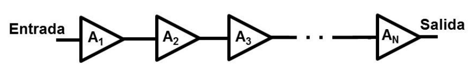
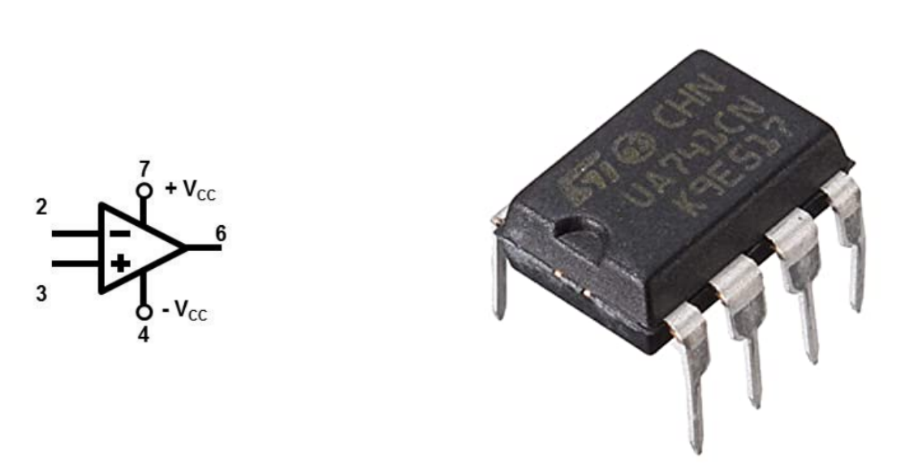
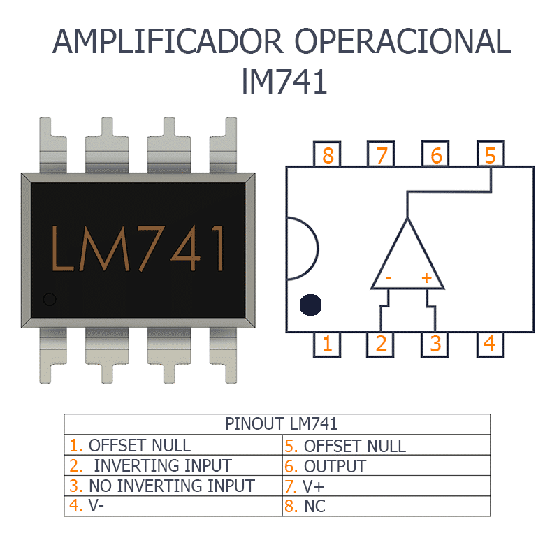
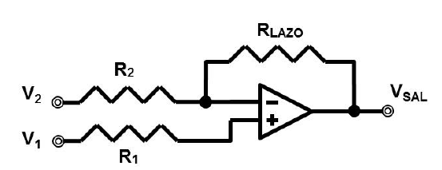
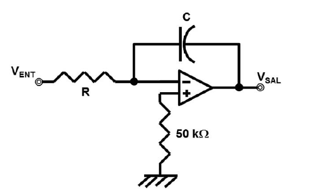
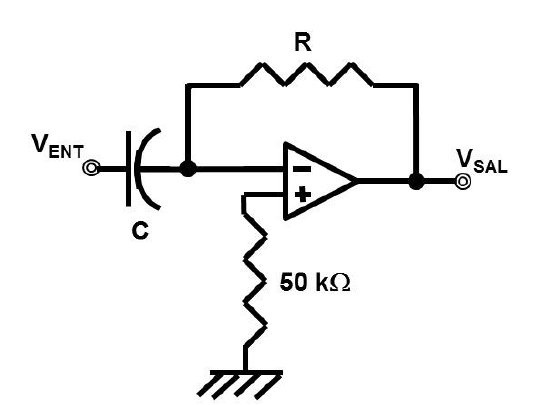

<style> .reveal section img { background:none; border:none; box-shadow:none; } #left { margin: 10px 0 15px 20px; text-align: center; float: left; z-index:-10; width:48%; font-size: 0.85em; line-height: 1.5; } #right { margin: 10px 0 15px 0; float: right; text-align: center; z-index:-10; width:48%; font-size: 0.85em; line-height: 1.5; } </style> # Unidad 3: Amplificadores Operacionales <span style="font-size: 20.0pt; "> **Profesor:** Ing. Israel Chaves Arbaiza </span> <span style="font-size: 20.0pt;"> **Curso**: Electrónica Básica para Ing. Mecánica </span> <img width="900" height="130" src="media/logo_slides.jpg"> --- ## Objetivos de la clase <span style="font-size: 22.0pt; "> * Conocer la teoría y tipos de amplificadores * Comprender los parámetros eléctricos internos de un amplificador operacional * Dominar circuitos específicos aplicando amplificadores operacionales </span> --- ## Teoría del amplificador <span style="font-size: 22.0pt; "> Un amplificador es un dispositivo capaz de cambiar la magnitud, la fase (o ambas) de una señal de entrada por medio de una ganancia constante, el valor de la salida será igual a la entrada multiplicada por la ganancia. $$ Salida=Entrada*Ganancia(A) $$ </span> --- ## Tipos de amplificadores <span style="font-size: 20.0pt; "> De acuerdo a la *magnitud* de su ganancia, se clasifican en: * **Amplificadores:** La salida es mayor que la entrada. $ |A|>1 $ * **Atenuadores:** La salida es menor que la entrada. $ |A|<1 $ * **Seguidores:** La salida tiene la misma magnitud de la entrada. $ |A|=1 $. Se utiliza para aislar impedancias en el circuito y/o cambiar la fase. </span> --- ## Tipos de amplificadores <span style="font-size: 20.0pt; "> De acuerdo a la *variable eléctrica*, se clasifican en: * **Amplificadores de voltaje:** Lo que se afecta es la tensión, lo que pase con la corriente no es importante. Por ejemplo, los transformadores o amplificadores operacionales. * **Amplificadores de corriente:** Se varía la corriente, no interesa lo que ocurra al voltaje. El BJT y los equipos de soldadura de arco son casos de este amplificador. * **Amplificadores de potencia:** La variable importante es la potencia, sin importar lo que ocurra al voltaje o a la corriente por separado. Por ejemplo, los amplificadores de equipos de audio para conciertos. *Las clasificaciones no son excluyentes entre sí, un amplificador siempre pertenecerá a un tipo de cada una* </span> --- ## Configuración en cascada <span style="font-size: 22.0pt; "> Es cuando los amplificadores se colocan uno detrás del otro, de tal forma que la salida del anterior es la entrada del que sigue  $$ A_{Total}=A_{1}*A_{2} *** A_{N} $$ </span> --- ## Parámetros eléctricos <span style="font-size: 20.0pt; "> El amplificador tiene una impedancia de entrada y otra de salida. El voltaje que se amplifica es el que se encuentra en esta impedancia de entrada y el valor amplificado estaría en una fuente dependiente en serie con la impedancia de salida. </span> <img width="700" height="350" src="media/ampli3.png"> --- ## Parámetros eléctricos <span style="font-size: 20.0pt; "> $$ V_{SAL}=\frac{A_{0}V_{i}R_{L}}{R_{L}+Z_{SAL}} $$ $$ V_{i}=\frac{V_{ENT}Z_{ENT}}{R_{S} + Z_{ENT}} $$ $$ A_{V}=\frac{V_{SAL}}{V_{ENT}}=\frac{A_0}{(1+\frac{R_s}{Z_{ENT}})(1+\frac{Z_{SAL}}{R_L})} $$ * $A_V$: Ganancia **real** de voltaje * $V_i$: Voltaje que realmente se amplifica * $R_S$: Resistencia equivalente del circuito a la entrada del amplificador. * $A_0$: Ganancia del amplificador, sin conectar. De la hoja de datos. * $R_L$: Carga a la salida del amplificador, donde cae $V_L$ * $Z_{ENT}$ y $Z_{SAL}$: Impedancias de entrada y salida </span> --- ## Parámetros eléctricos <span style="font-size: 20.0pt; "> Sin embargo, el comportamiento del amplificador, se puede aproximar al de uno ideal $ A_{V} \approx A_{0} $ si y sólo si: $$ Z_{ENT} \gg R_{S} $$ $$ Z_{SAL} \ll R_{L} $$ Donde para ser mucho mayor, o mucho menor, debe haber una diferencia de al menos **10 veces** entre los valores. </span> --- ## Retroalimentación <span style="font-size: 20.0pt; "> La salida se conecta a la entrada por medio de la resistencia de lazo, y el efecto de la salida se suma al de la entrada. </span> --- ## Retroalimentación <span style="font-size: 20.0pt; "> En esta configuración, se tiene que: $$ A_{V}=\frac{R_{LAZO}}{\frac{R_{ENT}+R_{LAZO}}{A_0}-R_{ENT}} $$ Pero, idealmente, si $ A_0 $ es muy alta, e ignorando el signo, se tiene: $$ A_{V}=\frac{R_{LAZO}}{R_{ENT}} $$ --- ## Retroalimentación <span style="font-size: 20.0pt; "> **Siempre y cuando:** $$ Z_{ENT} \gg R_{ENT} \gg R_{S} $$ $$ Z_{ENT} \gg R_{LAZO} $$ $$ A_{0} \gg 1 $$ $$ Z_{ENT} \gg R_{ENT} \gg R_{S} $$ $$ Z_{ENT} \gg R_{LAZO} $$ $$ A_{0} \gg 1 $$ </span> --- ## Amplificador Operacional <span style="font-size: 20.0pt; "> Amplifica el voltaje y permite hacer operaciones matemáticas. El más conocido es el IC-741, sus patillas son: <img width="700" height="350" src="media/ampli5.png"> Tiene alimentación bipolar (sin tierra). </span> --- ## Amplificador Operacional <span style="font-size: 20.0pt; "> A lazo abierto, se tiene que: $$ V_{SAL}=A_{0}(V^{+}-V^{-}) $$  </span> --- ## Amplificador Operacional <span style="font-size: 20.0pt; ">  </span> --- ## Circuitos con amp. operacionales <span style="font-size: 20.0pt; "> **Comparador:** El circuito comparador examina dos entradas e indica cuál de ellas es mayor, se basa en la saturación del 741. $$ V_{SAL} > 0 \Leftrightarrow V_{2} > V_{1} $$ $$ V_{SAL} < 0 \Leftrightarrow V_{1} > V_{2} $$ </span> --- ## Circuitos con amp. operacionales <span style="font-size: 20.0pt; "> **Inversor:** $$ A_{V}=- \frac{R_{LAZO}}{R_{ENT}} $$ </span> --- ### Circuitos con am. operacionales <span style="font-size: 18.0pt; "> **Sumador:** $$ V_{SAL}=- R_{LAZO} \Big( \frac{V_1}{R_1}+ \frac{V_2}{R_2}+ ... + \frac{V_N}{R_N} \Big) $$ </span> <img width="400" height="250" src="media/ampli9.png"> <span style="font-size: 15.0pt; "> Si todas las resistencias son iguales se obtiene a la salida la suma lineal de todos los voltajes (con el signo cambiado), si las resistencias de entrada son iguales y la resistencia de lazo igual a la de entrada entre el número de entradas se puede construir un promediador discreto </span> --- ## Circuitos con amp. operacionales <span style="font-size: 20.0pt; "> **Restador:** $$ V_{SAL}=R_{LAZO} \Big( \frac{V_1}{R_1} - \frac{V_2}{R_2} \Big) $$  </span> --- ## Circuitos con amp. operacionales <span style="font-size: 20.0pt; "> **Integrador:** $$ V_{SAL}=- \frac{1}{RC} \int V_{ent}(t) dt $$  </span> --- ## Circuitos con amp. operacionales <span style="font-size: 20.0pt; "> **Derivador:** $$ V_{SAL}=- RC \frac{d V_{ent}(t)}{dt} $$  </span> --- ## Ejercicio 1 <span style="font-size: 20.0pt; "> ¿Qué función matemática define el circuito de la figura? <img width="800" height="500" src="media/ejercicio1_amp.png"> </span> --- ## Ejercicio 2 <span style="font-size: 20.0pt; "> ¿Cuál es la función del circuito de la figura? <img width="800" height="500" src="media/ejercicio2_amp.png"> </span> --- ## Ejercicio 3 <span style="font-size: 20.0pt; "> En la figura se muestra un circuito sumador de tres voltajes, modifíquelo para que promedie tres señales </span>